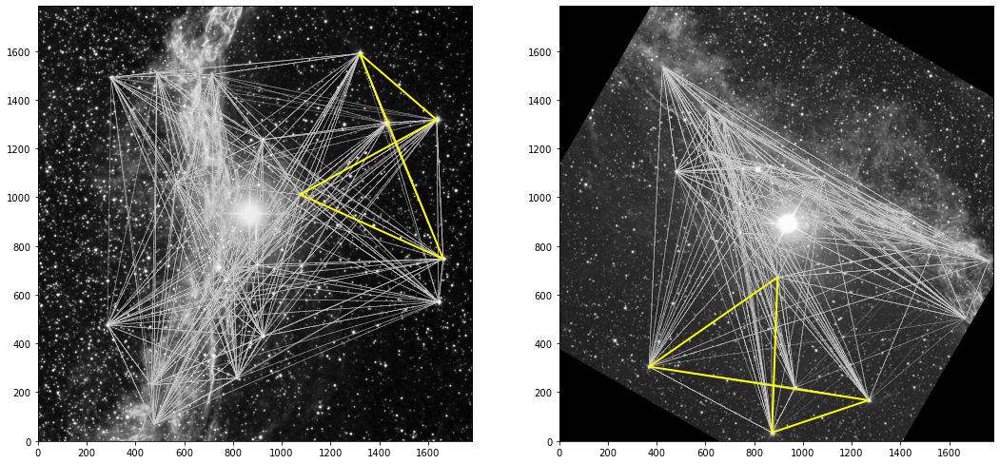

[1]:
from prose import finderchart
[34]:
coordinates = "20 45 38.0", "+30 42 30"
fov = (30, 30)
im1 = finderchart.sdss_image(coordinates, fov, filter="poss1_blue")
im2 = finderchart.sdss_image(coordinates, fov, filter="poss2ukstu_red")
INFO Querying https://archive.stsci.edu/cgi-bin/dss_form
INFO telescope Palomar Schmidt not found - using default
INFO Querying https://archive.stsci.edu/cgi-bin/dss_form
INFO telescope Oschin Schmidt - D not found - using default
[45]:
from skimage.transform import rotate, AffineTransform
[48]:
T = AffineTransform(scale=2, rotation=90)
[40]:
im2.data = rotate(im2.data, 120)
[41]:
from prose import blocks, Sequence
detetction_s = Sequence([blocks.SegmentedPeaks(n_stars=300, unit_euler=True)])
detetction_s.run([im1, im2])
RUN 100%|█████████████████████████████████████| 2/2 [00:00<00:00, 7.18images/s]
[42]:
from twirl.utils import *
from twirl.utils import _find_transform
quads1, stars1 = quads_stars(im1.stars_coords, n=20)
quads2, stars2 = quads_stars(im2.stars_coords, n=20)
[43]:
tolerance = 5
# KDTree
kdt = KDTree(quads1)
dist, indices = kdt.query(quads2)
# We pick the two asterisms leading to the highest stars matching
closeness = []
for i, m in enumerate(indices):
M = _find_transform(stars1[m], stars2[i])
new_s1 = affine_transform(M)(im1.stars_coords)
closeness.append(count_cross_match(im2.stars_coords, new_s1, tolerance=tolerance))
i = np.argmax(closeness)
[44]:
import matplotlib.pyplot as plt
plt.figure(figsize=(18, 10))
ax1 = plt.subplot(121)
im1.show(ax=ax1, stars=False, vmin=False, scale=0.1)
for s in stars1:
ax1.add_patch(plt.Polygon(s, fill=False, ec="w", alpha=0.02))
ax1.add_patch(plt.Polygon(stars1[indices[i]], fill=False, ec="yellow", alpha=1, lw=2))
ax = plt.subplot(122)
im2.show(ax=ax, stars=False, vmin=False, scale=0.1)
for s in stars2:
ax.add_patch(plt.Polygon(s, fill=False, ec="w", alpha=0.02))
ax.add_patch(plt.Polygon(stars2[i], fill=False, ec="yellow", alpha=1, lw=2))
[44]:
<matplotlib.patches.Polygon at 0x2dc4b4190>

[ ]: